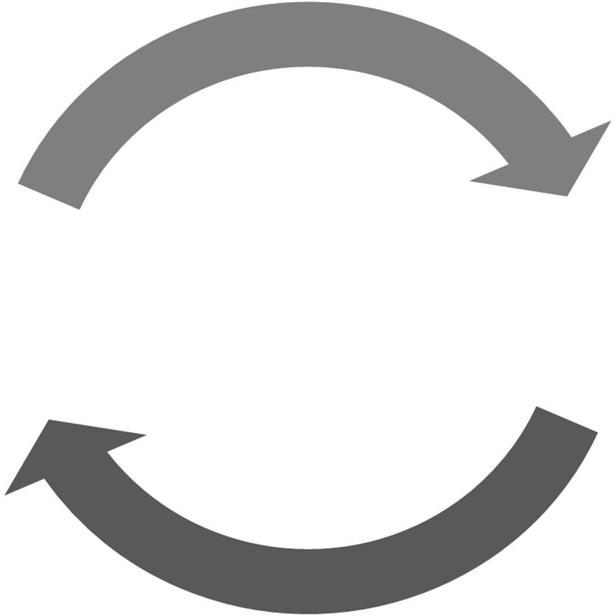

Elements of a machine learning pipeline
- Acquire raw data (read-in data.)
- Explore
- Train  + Process data + Cross-validate models
- Test
The focus of this post are the (pre-)processing steps of the data pipeline. As our muse, we are using data from an open-source ML project ("Give me some credit") to predict serious delinquency of credit borrowers.
Exploratory plots like this one help us prioritize data munging efforts.
Sea born pair plot of features by delinquency (green)
Processing
Handling Missing Values
The following function is adapted for objects developed in an earlier post on obeject-oriented programming for machine learning projects. The function generates several modified datasets from a single Trainer object (training set). These variations of the original training set are derived from either dropping rows or dropping features. This particular function saves these alternative training sets as additional Trainer objects, and indexes them to a ModelTrains object (Modeling.
def decode_and_drop_missings(trainer, ModelTrains, decodings_dict, except_threshold=None, encode_except=None, outcome_variable=None):
'''Inputs:
- Dataframe (Trainer)
- Decoding variables to values dictionary
- Optional discrete_threshold (i.e. 1000 unique values)
Returns 3 Dataframes of missings removal strategies.'''
encoded_features = get_encoded_features_list(trainer.now.copy(),
except_threshold,
excepting=encode_except)
decodetrainer = trainer.now.copy()
for i in range(len(decodings_dict.keys())):
if not decodings_dict[i]['on']:
decodings_dict[i]['on'] = encoded_features
else:
encoded_features.extend(decodings_dict[i]['on'])
raw_train, imputation_candidates = decode_extended_to_nan(decodetrainer, decodings_dict[i]['on'],
to_replace = decodings_dict[i]['to_replace'],
values = decodings_dict[i]['with_replace'])
# Corrected dataset with all missings in place. Stage as Trainer.
Tdecode = Trainer('FULL_MISS', raw_train, trainer.outcome)
Tdecode.set_parent(trainer, ModelTrains)
try:
ModelTrains.add(Tdecode)
except:
pass
# Derive binary missing indicator variables
dropped_train = Tdecode.now.copy()
derived_train = Tdecode.now.copy()
inspect_missing_list = []
for feature in imputation_candidates[imputation_candidates.Total_missing > 0].index:
if feature not in outcome_variable:
inspect_missing_list += [feature]
is_missing_var = feature + '_missing'
derived_train[is_missing_var] = derived_train[feature].isnull().map({True : 1, False : 0})
Tim = Trainer('FULL_ISMISS', derived_train, Tdecode.outcome)
Tim.set_parent(Tdecode, ModelTrains)
try:
ModelTrains.add(Tim)
except:
pass
# Drop all missings
if isinstance(outcome_variable, str):
outcome_variable = [outcome_variable]
X = Tim.now.copy()
X.dropna(how='any', axis=1, inplace=True)
Tcol = Trainer('COL_DROP', X, Tim.outcome)
Tcol.set_parent(Tim, ModelTrains)
try:
ModelTrains.add(Tcol)
except:
pass
dropped_train = drop_obs_w_anynan(Tdecode.now.copy(), encoded_features).copy()
Trow = Trainer('ROW_DROP', dropped_train, Tdecode.outcome)
Trow.set_parent(Tdecode, ModelTrains)
try:
ModelTrains.add(Trow)
except:
pass
for i in ModelTrains.trainers:
print(i.name, i.shape, i)
return inspect_missing_list
Variable Transformation
gen_transform_data generates a Trainer object with transformed variables, saving it to ModelTrains.
# Transform Data
def gen_transform_data(trainer, ModelTrains, transform_dict, transformations=None):
'''Inputs:
- Dataset (Trainer)
- dictionary of features to transform with
respective transformation function.'''
dataset = trainer.now.copy()
if not transformations:
transformations = {'log': 'np.log'}
track_transformations = {}
for feature in transform_dict.keys():
try:
fx = transform_dict[feature]
plus = 0
if fx in transformations:
new_feature = feature + '_' + fx
print('\nTransforming {} by way of {} = {}'
.format(feature, fx, new_feature))
if fx == 'log':
plus = 1
dataset[new_feature] = dataset[feature].apply(lambda x : eval(transformations[fx])(x + plus))
track_transformations[feature] = new_feature
else:
raise ValueError("Provide valid transformation function. {} is invalid.".format(fx))
except:
print('Transform of {} FAILED on {}'.format(feature, trainer.name))
pass
# Add new trainer
if trainer.now.equals(dataset):
return
else:
newname = trainer.name + '_'
for transform_command in transformations.keys():
newname += transform_command
newtrainer = Trainer(newname, dataset, trainer.outcome)
newtrainer.set_parent(trainer, ModelTrains)
newtrainer.transform(track_transformations)
ModelTrains.add(newtrainer)
for i in ModelTrains.trainers:
print(i.name, i.shape, i)
return
See earlier post on OOP tips for data preparation for machine learning projects.